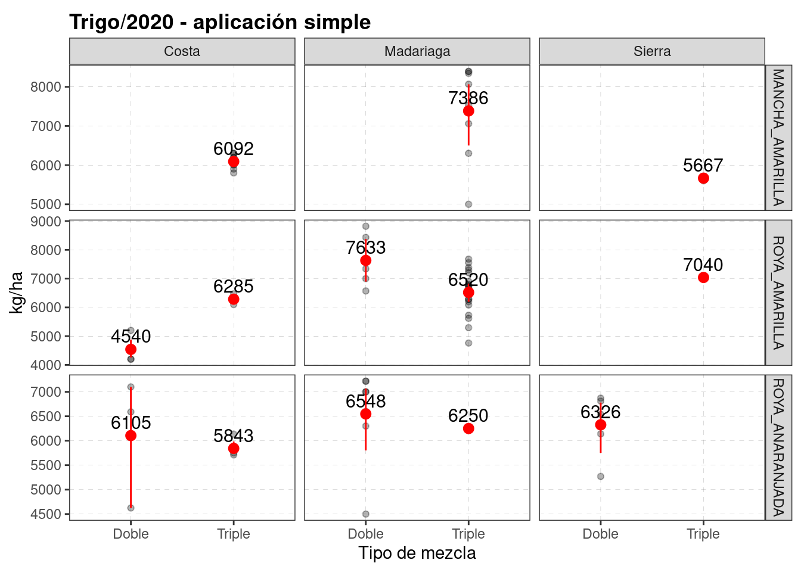
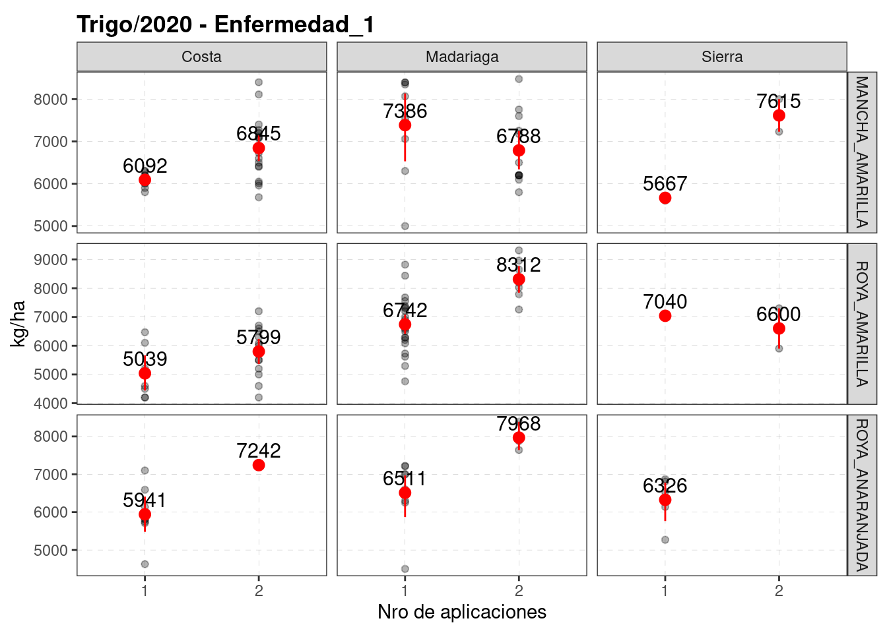

7 Protección
knitr::opts_chunk$set(echo = TRUE, message=FALSE, warning=FALSE)
pacman::p_load(tidyverse, googlesheets4, googledrive)
# drive_auth(email = "edwardsmolina@gmail.com")
# gs4_auth(email = "edwardsmolina@gmail.com")
source(here::here("0 themes.R"))
load(here::here("data/data.Rdata"))
# glimpse(dat)fungicidas = "https://docs.google.com/spreadsheets/d/1cTzo36jHRULfBf8c83TDpauxiwHrxeKrGprUUxLRzm0/edit?usp=sharing"
fungic <- gs4_get(fungicidas)
dfungi <- read_sheet(fungic, sheet = "fungi")
dfungi <- dfungi %>%
distinct(producto, .keep_all = TRUE) %>%
arrange(producto)
head(dfungi)## # A tibble: 6 x 18
## Cultivo Empresa producto dosis activos grupos DMI_1 DMI_2 QoI_1 SDHI_1 SDHI_2
## <chr> <chr> <chr> <dbl> <dbl> <chr> <chr> <chr> <chr> <chr> <chr>
## 1 Cebada BASF ALLEGRO 0.75 2 TE Epox… <NA> kres… <NA> <NA>
## 2 Cebada Adama ALMAGOR 1.25 3 TTE Tebu… Proc… Azox… <NA> <NA>
## 3 Cebada Syngenta AMISTAR… 0.4 2 TE Cypr… <NA> Azox… <NA> <NA>
## 4 Trigo Genérico AZOXY_P… 0.4 2 TE Cypr… <NA> Azox… <NA> <NA>
## 5 Cebada Zamba CINCHA_… 0.4 2 TE Cypr… <NA> Azox… <NA> <NA>
## 6 Cebada Bayer CRIPTON 0.6 2 TE Prot… <NA> Trif… <NA> <NA>
## # … with 7 more variables: contacto <chr>, c.DMI1 <dbl>, c.DMI2 <dbl>,
## # c.QoI <dbl>, c.SDHI1 <dbl>, c.SDHI2 <dbl>, c.contacto <dbl>dat %>%
select(cultivo_de_cosecha, campana, Zona, contains("fungicida")) %>%
filter(str_detect(cultivo_de_cosecha, 'Tr|Ceb')) %>%
filter(!str_detect(cultivo_de_cosecha, 'Candeal')) %>%
rowwise() %>%
mutate(aplicaciones = sum(!is.na(fungicida1), !is.na(fungicida2))) %>%
ungroup() %>%
count(cultivo_de_cosecha, Zona, campana, aplicaciones) %>%
arrange(cultivo_de_cosecha, Zona,campana, aplicaciones, -n) %>%
group_by(cultivo_de_cosecha, Zona, campana) %>%
mutate(porcent = round((n/sum(n))*100)) -> dat_fungi
head(dat_fungi)## # A tibble: 6 x 6
## # Groups: cultivo_de_cosecha, Zona, campana [4]
## cultivo_de_cosecha Zona campana aplicaciones n porcent
## <chr> <chr> <chr> <int> <int> <dbl>
## 1 Cebada Costa 17-18 0 15 100
## 2 Cebada Costa 18-19 1 9 22
## 3 Cebada Costa 18-19 2 31 78
## 4 Cebada Costa 19-20 1 6 32
## 5 Cebada Costa 19-20 2 13 68
## 6 Cebada Costa 20-21 1 7 64Cuantas aplicaciones se llevan los cultivos?
dat_fungi %>%
filter(!campana == "17-18") %>%
group_by(cultivo_de_cosecha, Zona, campana)%>%
summarise(media = weighted.mean(aplicaciones, n)) -> n_fungi
head(n_fungi)## # A tibble: 6 x 4
## # Groups: cultivo_de_cosecha, Zona [2]
## cultivo_de_cosecha Zona campana media
## <chr> <chr> <chr> <dbl>
## 1 Cebada Costa 18-19 1.78
## 2 Cebada Costa 19-20 1.68
## 3 Cebada Costa 20-21 1.36
## 4 Cebada Madariaga 18-19 1.69
## 5 Cebada Madariaga 19-20 1.29
## 6 Cebada Madariaga 20-21 1.56dat_fungi %>%
mutate(aplicaciones = fct_relevel(as.factor(aplicaciones), c('0','1','2'))) %>%
filter(!campana =="17-18") %>%
filter(cultivo_de_cosecha =="Trigo") %>%
ggplot(aes(x = Zona, y = porcent, fill =forcats::fct_rev(aplicaciones),
label = round(porcent))) +
facet_grid(. ~ campana)+
geom_col(position = position_stack(), color = "black", alpha= 0.5) +
geom_text(position = position_stack(vjust = .5), fontface = "bold", size=3) +
labs(title = "Trigo" ,
fill = "Nro de aplicaciones",
x = "", y = "% lotes aplicados")+
geom_text(data = n_fungi %>%
filter(cultivo_de_cosecha =="Trigo"),
aes(x= Zona, y=-10,
label = round(media,1),
fill = NA),
angle = 0) +
scale_y_continuous(expand = expand_scale(add = c(13,3)))+
theme(axis.text.x=element_blank())+
coord_flip()+
scale_fill_manual(values = c("0"= "green3", "1"="steelblue", "2" ="red3"))+
theme_dens1_legend
# ggsave(last_plot(), file = "5_plots_fungi/fungicidas_aplicaciones_trigo.png", width = 7, height = 3)dat_fungi %>%
mutate(aplicaciones = fct_relevel(as.factor(aplicaciones), c('0','1','2'))) %>%
filter(!campana =="17-18") %>%
filter(cultivo_de_cosecha =="Cebada") %>%
ggplot(aes(x = Zona, y = porcent, fill =forcats::fct_rev(aplicaciones),
label = round(porcent))) +
facet_grid(. ~ campana)+
geom_col(position = position_stack(), color = "black", alpha= 0.5) +
geom_text(position = position_stack(vjust = .5), fontface = "bold", size=3) +
labs(title = "Cebada" ,
fill = "Nro de aplicaciones",
x = "", y = "% lotes aplicados")+
geom_text(data = n_fungi %>%
filter(cultivo_de_cosecha =="Trigo"),
aes(x= Zona, y=-10,
label = round(media,1),
fill = NA),
angle = 0) +
scale_y_continuous(expand = expand_scale(add = c(13,3)))+
theme(axis.text.x=element_blank())+
coord_flip()+
scale_fill_manual(values = c("0"= "green3", "1"="steelblue", "2" ="red3"))+
theme_dens1_legend 
# ggsave(last_plot(), file = "5_plots_fungi/fungicidas_aplicaciones_cebada.png", width = 7,
# height = 3)Lotes aplicados en 2020
dat %>%
filter(campana == "20-21") %>%
filter(fungicida == "Si") %>%
filter(str_detect(cultivo_de_cosecha, 'Tr|Ceb')) %>%
filter(!str_detect(cultivo_de_cosecha, 'Candeal')) %>%
select(cultivo_de_cosecha, Zona, campo, variedad, fungicida:enfermedad_2, rinde) %>%
rowwise() %>%
mutate(aplicaciones = sum(!is.na(fungicida1),!is.na(fungicida2), na.rm = T)) -> df20
head(df20)## # A tibble: 6 x 13
## # Rowwise:
## cultivo_de_cosecha Zona campo variedad fungicida fungicida1 feno_fungi1
## <chr> <chr> <chr> <chr> <chr> <chr> <list>
## 1 Trigo Costa La Susa… BAGUETTE_8… Si ELATUS_ACE <chr [1]>
## 2 Trigo Costa La Susa… BAGUETTE_8… Si ELATUS_ACE <chr [1]>
## 3 Trigo Costa La Susa… BAGUETTE_8… Si ELATUS_ACE <chr [1]>
## 4 Trigo Costa La Susa… BAGUETTE_8… Si ELATUS_ACE <chr [1]>
## 5 Trigo Costa La Susa… BAGUETTE_8… Si ELATUS_ACE <chr [1]>
## 6 Trigo Costa La Susa… BAGUETTE_8… Si ELATUS_ACE <chr [1]>
## # … with 6 more variables: enfermedad_1 <chr>, fungicida2 <chr>,
## # feno_fungi2 <chr>, enfermedad_2 <chr>, rinde <dbl>, aplicaciones <int>Los que aplican 1 solo fungi: en que estadio lo hacen?
## # A tibble: 35 x 18
## Cultivo Empresa producto dosis activos grupos DMI_1 DMI_2 QoI_1 SDHI_1 SDHI_2
## <chr> <chr> <chr> <dbl> <dbl> <chr> <chr> <chr> <chr> <chr> <chr>
## 1 Cebada BASF ALLEGRO 0.75 2 TE Epox… <NA> kres… <NA> <NA>
## 2 Cebada Adama ALMAGOR 1.25 3 TTE Tebu… Proc… Azox… <NA> <NA>
## 3 Cebada Syngen… AMISTAR… 0.4 2 TE Cypr… <NA> Azox… <NA> <NA>
## 4 Trigo Genéri… AZOXY_P… 0.4 2 TE Cypr… <NA> Azox… <NA> <NA>
## 5 Cebada Zamba CINCHA_… 0.4 2 TE Cypr… <NA> Azox… <NA> <NA>
## 6 Cebada Bayer CRIPTON 0.6 2 TE Prot… <NA> Trif… <NA> <NA>
## 7 Cebada Bayer CRIPTON… 0.6 3 TEC Prot… <NA> Trif… Bixaf… <NA>
## 8 Trigo Adama CUSTODIA 0.7 2 TE Tebu… <NA> Azox… <NA> <NA>
## 9 Trigo Syngen… DACONIL 2 1 O <NA> <NA> <NA> <NA> <NA>
## 10 Cebada BASF DUETT_P… 1.2 2 TT Epox… Metc… <NA> <NA> <NA>
## # … with 25 more rows, and 7 more variables: contacto <chr>, c.DMI1 <dbl>,
## # c.DMI2 <dbl>, c.QoI <dbl>, c.SDHI1 <dbl>, c.SDHI2 <dbl>, c.contacto <dbl>df20 %>%
count(cultivo_de_cosecha, aplicaciones, producto= fungicida1) %>%
arrange(-n) %>%
left_join(select(dfungi, producto, activos, grupos), by = "producto") %>%
drop_na(producto) %>%
mutate(mezcla = case_when(
activos == 2 ~ "Doble",
activos == 3 ~ "Triple"),
mezcla = fct_rev(mezcla)) -> df20_fungi1
head(df20_fungi1)## # A tibble: 6 x 7
## cultivo_de_cosecha aplicaciones producto n activos grupos mezcla
## <chr> <int> <chr> <int> <dbl> <chr> <fct>
## 1 Trigo 1 MIRAVIS_TRIPLE 37 3 TCC Triple
## 2 Trigo 2 CRIPTON 22 2 TE Doble
## 3 Cebada 1 MIRAVIS_TRIPLE 15 3 TCC Triple
## 4 Trigo 2 AMISTAR_XTRA 15 2 TE Doble
## 5 Trigo 1 ORQUESTA_ULTRA 12 3 TEC Triple
## 6 Trigo 1 TRIDIUM 12 3 TEO Tripledf20_fungi1 %>%
filter(cultivo_de_cosecha == "Trigo") %>%
filter(aplicaciones ==1) %>%
PieDonut(aes(pies=mezcla, donuts=producto, count =n))
df20_fungi1 %>%
filter(cultivo_de_cosecha == "Cebada") %>%
filter(aplicaciones ==1) %>%
PieDonut(aes(pies=mezcla, donuts=producto, count =n))
df20_fungi1 %>%
filter(aplicaciones ==2) %>%
filter(cultivo_de_cosecha == "Trigo") %>%
PieDonut(aes(pies=mezcla, donuts=producto, count =n),
labelposition=1, r0=0.2,r1=0.8,r2=1.4)df20_fungi1 %>%
filter(aplicaciones ==2) %>%
filter(cultivo_de_cosecha == "Cebada") %>%
PieDonut(aes(pies=mezcla, donuts=producto, count =n),
labelposition=0, r0=0.2,r1=0.8,r2=1.4)
df20 %>%
filter(aplicaciones ==2) %>%
count(cultivo_de_cosecha, producto= fungicida2) %>%
arrange(-n) %>%
left_join(select(dfungi, producto, activos, grupos), by = "producto") %>%
drop_na(producto) %>%
mutate(mezcla = case_when(
activos == 2 ~ "Doble",
activos == 3 ~ "Triple"),
mezcla = fct_rev(mezcla)) -> df20_fungi2
df20_fungi2 %>%
filter(cultivo_de_cosecha == "Trigo") %>%
PieDonut(aes(pies=mezcla, donuts=producto, count =n),
labelposition=0, r0=0.2,r1=0.8,r2=1.4) df20_fungi2 %>%
filter(cultivo_de_cosecha == "Cebada") %>%
PieDonut(aes(pies=mezcla, donuts=producto, count =n),
labelposition=0, r0=0.2,r1=0.8,r2=1.4) 
list.files(path = here::here("fungi_plots"),
pattern = ".png",
all.files = TRUE, full.names = TRUE) %>%
map(~ drive_upload(., path = as_dribble("juanchi_guille/JMF_fina_2020/5_plots_fungi"),
overwrite = TRUE))## list()df20 %>%
filter(cultivo_de_cosecha == "Trigo") %>%
# filter(aplicaciones == 1) %>%
drop_na(enfermedad_1) %>%
rename(producto = fungicida1) %>%
left_join(select(dfungi, producto, activos, grupos), by = "producto") %>%
drop_na(producto) %>%
mutate(mezcla = case_when(
activos == 2 ~ "Doble",
activos == 3 ~ "Triple"),
mezcla = mezcla) %>%
ggplot()+
facet_grid(enfermedad_1 ~ Zona, scales = "free_y")+
aes(x = factor(aplicaciones), y=rinde)+
geom_point(alpha=0.3)+
stat_summary(fun.data = "mean_cl_boot", colour = "red", size = 0.5)+
stat_summary(aes(label=round(..y..,0)),
fun=mean, geom="text", size=4,vjust = -0.5)+
labs(x = "Nro de aplicaciones", y = "kg/ha", title = "Trigo/2020")+
theme_bw2df20 %>%
filter(cultivo_de_cosecha == "Trigo") %>%
filter(aplicaciones == 1) %>%
drop_na(enfermedad_1) %>%
rename(producto = fungicida1) %>%
left_join(select(dfungi, producto, activos, grupos), by = "producto") %>%
drop_na(producto) %>%
mutate(mezcla = case_when(
activos == 2 ~ "Doble",
activos == 3 ~ "Triple"),
mezcla = mezcla) %>%
ggplot()+
facet_grid(enfermedad_1 ~ Zona, scales = "free_y")+
aes(x = factor(mezcla), y=rinde)+
geom_point(alpha=0.3)+
stat_summary(fun.data = "mean_cl_boot", colour = "red", size = 0.5)+
stat_summary(aes(label=round(..y..,0)),
fun=mean, geom="text", size=4,vjust = -0.5)+
labs(x = "Tipo de mezcla", y = "kg/ha", title = "Trigo/2020 - aplicación simple")+
theme_bw2
df20 %>%
filter(cultivo_de_cosecha == "Trigo") %>%
# filter(aplicaciones == 1) %>%
filter(Zona == "Madariaga") %>%
# count(campo) %>% arrange(-n)
filter(campo == "Bellamar") %>%
drop_na(enfermedad_1) %>%
rename(producto = fungicida1) %>%
left_join(select(dfungi, producto, activos, grupos), by = "producto") %>%
# count(producto) %>% arrange(-n)
drop_na(producto) %>%
mutate(mezcla = case_when(
activos == 2 ~ "Doble",
activos == 3 ~ "Triple"),
mezcla = mezcla) %>%
ggplot()+
# facet_grid(. ~ enfermedad_1, scales = "free_y")+
aes(x = producto, y=rinde)+
stat_summary(fun.data = "mean_cl_boot", colour = "red", size = 0.5)+
stat_summary(aes(label=round(..y..,0)),
fun=mean, geom="text", size=4,vjust = -0.5)+
geom_point(alpha=0.3)+
labs(x = "Tipo de mezcla", y = "kg/ha", title = "Trigo/2020 - aplicación simple")+
coord_flip()+
theme_bw2df20 %>%
filter(cultivo_de_cosecha == "Trigo") %>%
drop_na(enfermedad_1) %>%
# distinct(enfermedad_1) %>% pull
ggplot()+
aes(x = factor(aplicaciones), y=rinde)+
geom_point(alpha=0.3)+
stat_summary(fun.data = "mean_cl_boot", colour = "red", size = 0.5)+
facet_grid(enfermedad_1 ~ Zona, scales = "free_y")+
stat_summary(aes(label=round(..y..,0)),
fun=mean, geom="text", size=4,vjust = -0.5)+
labs(x = "Nro de aplicaciones", y = "kg/ha", title = "Trigo/2020 - Enfermedad_1 ")+
theme_bw2
n_fun <- function(x){
return(data.frame(y = -Inf, label = paste0("n = ",length(x))))
}
df20 %>%
filter(cultivo_de_cosecha == "Trigo") %>%
# count(variedad) %>% arrange(-n)
filter(str_detect(variedad, "BAGUETTE")) %>%
drop_na(enfermedad_1) %>%
ggplot()+
aes(x = factor(aplicaciones), y=rinde)+
geom_point(aes(col=variedad), alpha=0.3)+
stat_summary(fun.data = "mean_cl_boot", colour = "red", size = 0.5)+
facet_grid(. ~ enfermedad_1, scales = "free_y")+
stat_summary(aes(label=round(..y..,0)),
fun=mean, geom="text", size=4, vjust = -0.5)+
stat_summary(fun.data = n_fun, geom = "text", vjust = -0.5)+
labs(x = "Nro de aplicaciones", y = "kg/ha", title = "Trigo/2020 - Enfermedad_1 ")+
theme_bw2